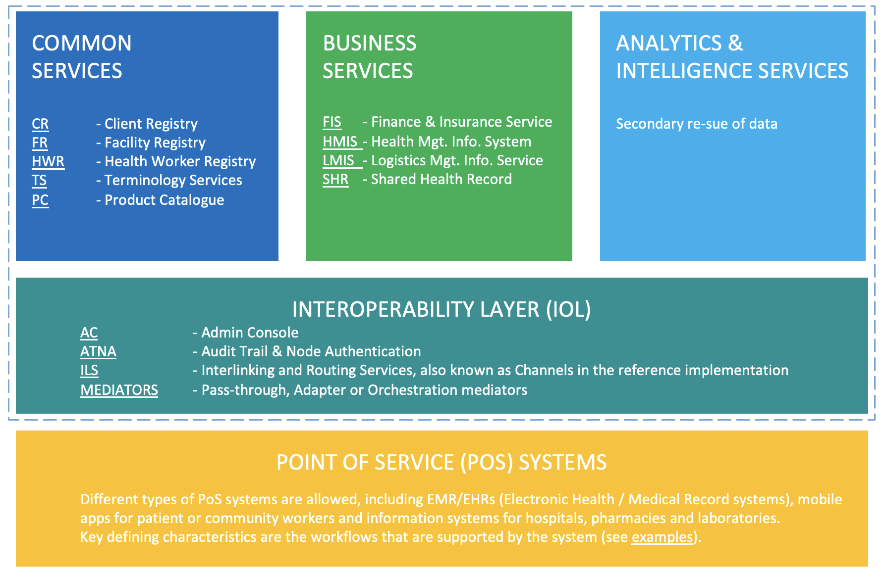

A health data commons based on the modern data stack
The need for a health data commons
Many organizations and jurisdictions struggle with the digital transformation of healthcare. In a recent analysis of the Dutch health information system, for example, the OECD concluded that several fundamental barriers need to be overcome, most notably the fragmentation of the health system. Paradoxically, fragmentation is a design feature intended to enable competition and market mechanisms to work, but at the same time presents an institutional barrier to data sharing and exchange. Fragmentation has particularly affected electronic medical data, where despite efforts toward data exchange, the data remain underdeveloped, siloed and underused. Lack of alignment and a common interpretation of legislation and regulations also present a challenge to advancing secure health data sharing, accessibility and use.
These challenges are not unique to the Dutch system, but are prevalent in many jurisdictions and regions. Initiatives such as the Lancet and Financial Times commission on governing health futures have laid out a development path to address these challenges. The concept of health data commons (HDC) is a key element in this approach where such commons are required
- to be build within a governance architecture that creates trust in digital health by enfranchising patients and vulnerable groups, ensuring health and digital rights, and regulating powerful players in the digital health ecosystem;
- to support a new approach to the collection and use of health data based on the concept of data solidarity, with the aim of simultaneously protecting individual rights, promoting the public good potential of such data, and building a culture of data justice and equity;
- to be designed in such a way to be conducive to strong ownership of digital health strategies and clear investment roadmaps that help prioritize those technologies that are most needed at different levels of digital health maturity.
Despite the challenges, we want to demonstrate that patient-centric data access and reuse is feasible, today. We take the approach of “show, don’t tell”. Through implementing demonstrator projects that contribute towards the creation of a Health Data Commons (HDC), we show that health data sharing can be achieved in LMICs at acceptable cost and low technical risk. This document describes the learnings from the HDC project. Through these demonstrators we aim to initiate a paradigm shift as to how data sharing can be realized such that it can act as a catalyst towards achieving UHC.
In this handbook, we provide a detailed technical description of a solution design for a HDC based on the OpenHIE framework. This handbook aims to address professionals in the area of health informatics, data analytics and data architecure.
the OpenHIE framework

The HDC project takes the openHIE framework1 as a starting point, being the most generic and commonly used health information interoperability framework. This framework has by and large been adopted by sub-Saharan African countries2, including Nigeria3, Kenya4 and Tanzania.5
The HDC framework and its components are shown in figure 1. The bottom layer (yellow) comprises the point of service (PoS) systems, which includes the systems used by clinicians, health professionals, community health workers and the like. Examples of such systems are OpenMRS electronic medical records (EMR) system and the RapidSMS mHealth application, which are used to access and update a patient’s records, register activities and record healthcare transactions.
The second, middle layer (teal) constitutes the interoperablity layer (IOL), which acts as a gateway for exchanging information between systems. Any type of information exchange, be it between two PoS systems, or between a PoS system and business services (explained below), is mediated through this interoperability layer. The interoperability layer provides functionality such as routing, translation services, auditing and authentication.
The top layer of framework comprises three distinct domains. Common Services (blue) include a variety of registry services that are designed to uniquely identify and track unique patients, facilities, healthcare products, and terminology that are used throughout the health data commons. Business Service (green) are designed to support the delivery of care within the health system. The District Health Information System version 2, for example, is a well-known and widely used Health Management Information System for collecting, analyzing, visualizing and sharing data through combinining data from multiple PoS systems for a given geography or jurisdiction.6
The HDC framework explicitly adds a third domain in the top layer, which is not included in the OpenHIE specification, namely Analytics & Intelligence Services (light blue). The rationale for this addition is to facilitate secondary use of health data for academic research, real-world evidence studies etc. within the nascent concept of health data spaces.7 Note that the Kenyan Health Information Systems Interoperability Framework (KHISIF) has also explicitly included the analytics domain.